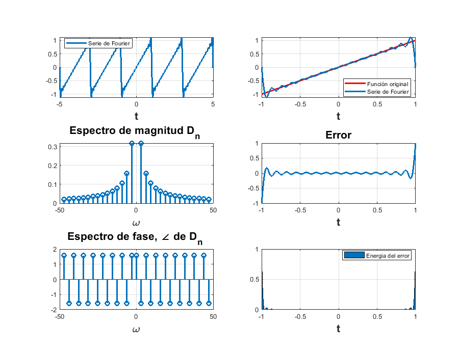
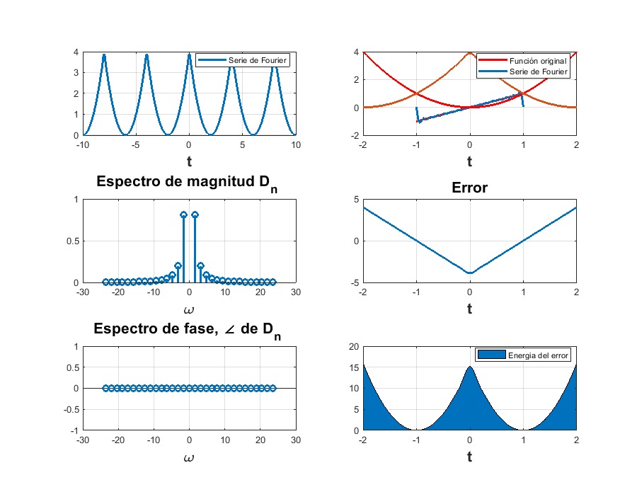

PR8
Problema 1
%Encuentra la expresión de la serie de Fourier para la señal f(t) = t en %el intervalo [-1,1]. %Tenemos de forma analítica, la serie trigonométrica compacta es: % $$S_{f}(t)= \sum_{n=1}^{\infty}\frac{-2cos(n\pi)}{n\pi}cos(nw_{0}t)$$ %Y la compleja: % $$S_{f}(t)= \sum_{-\infty}^{\infty}\frac{jcos(n\pi)}{n\pi}e^{nw_0jt}$$ %Tomando como base el siguiente problema se usará la función dada para %encontrar los datos requeridos. %Para empezar, se cambió un poco la función para poder ajustar los %parámetros que tenemos y que el resultado salga bien, de modo que al hacer %eso colocamos las siguientes líneas. d0=0; dn=@(n) (j*cos(pi*n))/(pi*n); t0=-1; tf=1; f=@(t) t; armo=15; a=-5; b=5; sfc(t0,tf,dn,d0,f,armo,a,b) % <<Problema_1_compleja.PNG>>
Problema 2
%Encuentra la expresión de la serie de Fourier para la señal f(t) = t^2 en %el invertalo [-2,2] %Tenemos de forma analítica, la serie trigonométrica compacta es: % $$S_{f}(t)= % \frac{4}{3}+\sum_{n=1}^{\infty}\frac{16}{n^2\pi^2}cos(\frac{n\pi t}{2})$$ %Y para la compleja: % $$S_{f}(t)=\sum_{n=1}^{\infty}\frac{8}{n^2\pi^2}e^{nw_0jt}$$ %Ingresando los datos a la función, tenemos que: d0=4/3; dn=@(n) (8)/(pi*n*pi*n); t0=-2; tf=2; f=@(t) t.^2; armo=15; a=-10; b=10; sfc(t0,tf,dn,d0,f,armo,a,b) % <<Problema_2_compleja.PNG>>